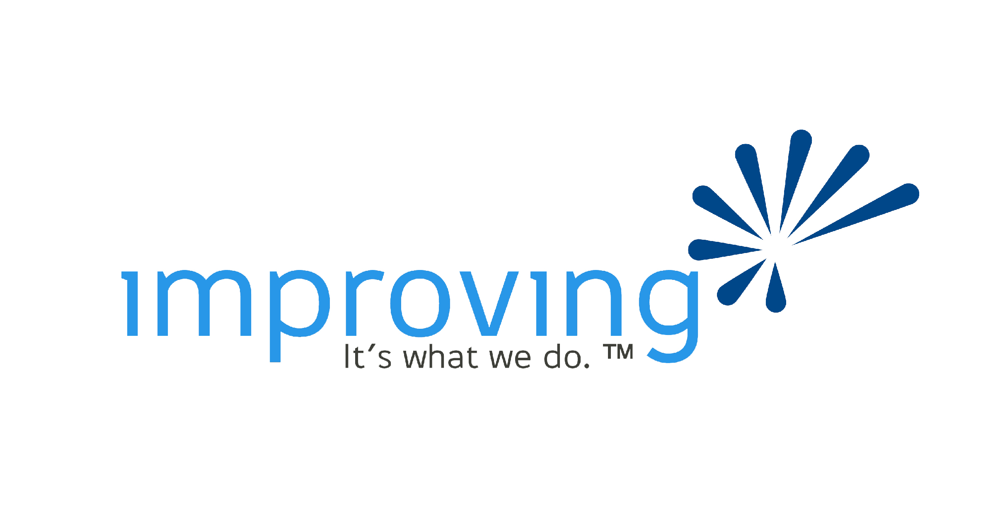

Houston Business Analysts · August 19, 2026
From Requirements to Reliable AI
The Business Analyst as Context Architect
Brad Groux
Digital Meld
Interactive session · questions welcome
Houston Business Analysts host
Thanks to our hosts, Improving!

Improving is a complete IT services company dedicated to positively changing the perception of the IT professional. They offer cutting-edge solutions through IT consulting, software development, and agile training to help our clients prosper and achieve their most challenging technology goals
Your facilitator
Brad Groux
CEO of Digital Meld, open-source maintainer, and builder of practical AI workflows that turn messy business context into inspectable work.
Today’s perspective: practitioner first—what survives contact with real processes, real constraints, and accountable people.

Advocate for evidence-backed delivery.
Own your operating model. Rent your tools.
Let’s start with the room
Where has AI already created friction?
01 · SHOW OF HANDS
Used AI at work in the last month?
Keep your hand up if the result entered a real business process.
02 · SAME QUESTION
Received two meaningfully different answers?
What context was missing or changed?
03 · PROCESS REALITY
Automated a process nobody fully understood?
Where did the hidden exception surface?
“
If one does not know to what port one is sailing, no wind is favorable.
Seneca · Moral Letters to Lucilius, 71.3
For AI work: speed is not value until the business agrees on the destination and the evidence that proves arrival.
The thesis
Your organization does not have an AI problem first.
Unclear work goes in
Competing sources, implied ownership, undocumented exceptions, weak data definitions, and no shared definition of done.
→
Confident inconsistency comes out
The agent fills gaps, varies the path, crosses decision boundaries, and produces an answer nobody can reliably verify.
The actual first problem is context: what is true, what is allowed, what happens next, and what evidence means done.
The opportunity
Business analysts already do the hard part.
AI increases the value of elicitation, process analysis, data definition, traceability, acceptance criteria, and stakeholder alignment.
PeopleOwners, users, approvers, affected parties.
ProcessTriggers, paths, exceptions, handoffs.
DataMeaning, source, owner, quality, sensitivity.
ContextDurable rules and shared understanding.
AgentOne bounded, reviewable action.
EvidenceTests, citations, review, approval, audit.
The shared work surface
Markdown makes context inspectable.
# Vendor onboarding
## Goal
Prepare a review packet.
## Stop when
- tax ID is missing
- sanctions screening flags
- approval authority is unclear
## Done when
- every claim cites a source
- a person owns the next decision
ReadableOperators, analysts, reviewers, and agents can use the same artifact.
ReviewableSmall files expose assumptions, changes, and ownership better than one giant prompt.
PortableThe business logic is not trapped inside a chat history or one product.
The artifact stack · foundation
Start with what is known, how work happens, and what the data means.
Source notesWhat do we know?Evidence, provenance, conflicts, and open questions.
Process briefWhat actually happens?Actors, current state, decisions, handoffs, and exceptions.
Data contractWhat does the data mean?Source, owner, format, validation, freshness, and sensitivity.
GlossaryDo we mean the same thing?Shared terms, statuses, thresholds, and policy language.
The artifact stack · operation
Give each kind of context one clear job.
AGENTS.mdWhat rules always apply here?Standing boundaries, source precedence, and verification commands.
MemoryWhat prior context may help?Useful recall and lessons, never the only copy of a required rule.
SOPHow is work performed?Steps, decisions, stop conditions, escalation, and handoff.
PRDWhy change, and what is success?Problem, users, outcomes, scope, non-goals, and acceptance criteria.
SOP = Standard Operating Procedure. The repeatable steps, decision rules, controls, exceptions, and handoffs for performing work.
PRD = Product Requirements Document. The problem, users, scope, constraints, and acceptance criteria for a proposed change.
The artifact stack · reuse and assurance
Package stable methods. Prove every important outcome.
Skill
A focused, reusable workflow with instructions, references, templates, and deterministic helpers when useful.
BA analogue: a versioned playbook or center-of-excellence method.
Acceptance checks
Examples, edge cases, expected decisions, required evidence, and a visible human review gate.
BA analogue: acceptance criteria, traceability, UAT, and controls.
Fictional demonstration
Vendor onboarding
A familiar cross-industry process with incomplete notes, conflicting rules, missing data, and a decision that must remain human.
Fictional data · Draft only · No external actions
Raw notesInterviews, policy excerpts, sample records.
ChallengeFacts, assumptions, conflicts, missing owners.
StructureProcess, data, guidance, SOP, PRD, skill.
VerifyPass, clarify, and stop scenarios with evidence.
The demo is not “watch AI write.” The demo is “watch the business make ambiguity visible and testable.”
Demo one · current-state discovery
What would you refuse to let the agent assume?
AP: “We need a W-9 before setup, except rush vendors sometimes start by email.”
Procurement: “Business owner approval is enough below the threshold.”
Policy: “All vendors require screening before approval.”
Spreadsheet: “risk_level: medium” — with no definition or owner.
Which statements are facts?
Where do the sources conflict?
Who owns the missing decisions?
Audience challenge: name one exception, one undefined term, and one decision owner before we ask Codex for a process.
Demo one · the useful output
The first win is not an answer. It is a better question set.
Confirmed
Facts with sources
Required documents, actors, stated policy rules, and the exact source supporting each claim.
Unresolved
Assumptions and conflicts
Rush handling, threshold authority, risk meaning, and inconsistent source precedence stay visible.
Owned
Focused elicitation
Seven questions ranked by execution risk, each routed to a named business or data owner.
BA move: do not reward the agent for filling a gap. Reward it for identifying the gap, its risk, and the person who can resolve it.
Demo two · make meaning executable
A field name is not a data definition.
legal_nameRegistered legal entity nameW-9 · Vendor ownerExact textCLARIFY
tax_id_statusPresence and validation state, not the valueAP system · AP ownerAllowed statusCLARIFY
screening_resultApproved screening dispositionRisk system · Risk ownerPASS / FLAGSTOP
risk_levelApproved category from glossaryRisk policy · Risk ownerLow / Med / HighCLARIFY
Ask every time: source, owner, validation, sensitivity, permitted use, freshness, and what happens when it is missing or wrong.
Authority matters
Memory can help recall. It cannot quietly become policy.
AGENTS.md
Standing workspace guidance: approved sources, action boundaries, required checks, and stop/escalate behavior.
Checked in, reviewed, and close to the work it governs.
Memory
Helpful prior context: recurring preferences, lessons, and history that may speed orientation.
Useful recall, but not the only copy of a required business rule.
Control: if the workflow must follow a rule every time, put it in reviewed guidance, policy, an SOP, or code—not only in memory.
Demo two · turn context into operation
Three artifacts separate procedure, intent, and reuse.
SOP
How is the work performed?
Prerequisites, ordered steps, decision rules, exceptions, stop conditions, escalation, verification, and handoff.
PRD
Why change, and what is success?
Problem, users, measurable outcomes, scope, non-goals, authority boundary, and acceptance criteria.
Skill
What stable method deserves reuse?
One focused review workflow that loads the right references and returns the same evidence shape each time.
Do not collapse these into one giant prompt. Separate artifacts make ownership, change review, and traceability easier.
Verification before automation
Give every test case a clear expected response.
V means verification. V-001, V-002, and V-003 are simple reference IDs so the team can discuss, rerun, and trace the same test cases.
V-001 · Complete → PASS
All required information is present and no rule is triggered. Prepare a review-ready draft with evidence.
V-002 · Incomplete → CLARIFY
Required information is missing or ambiguous. Name the gap and ask the responsible person a focused question.
V-003 · Restricted → STOP
A policy or authority boundary is triggered. Stop the workflow, cite the rule, and route it to the decision owner.
Reliable does not mean “always completes.” Reliable means it passes when allowed, clarifies when incomplete, and stops when it lacks authority.
Live Codex workbench
Now run one bounded case.
The workspace already contains the reviewed context. The work request makes the goal and proof explicit.
GoalReview vendor V-002 and prepare a decision-support packet.
ContextUse the checked-in source, process, data, guidance, SOP, PRD, skill, and scenarios.
ConstraintsDo not infer missing rules, approve a vendor, change a record, or take external action.
Done whenReturn PASS, CLARIFY, or STOP / ESCALATE with facts, rules, owner, and evidence.
Expected: V-002 returns CLARIFY. If it does not, we inspect the source, context, skill, and expected result instead of rewriting the evidence.
Requirements intake: no decision owner or acceptance criteria → CLARIFY.
Policy exception: requester lacks approval authority → STOP and route to the policy owner.
Your turn · whiteboard exercise
Make one audience workflow AI-ready.
People
Who owns the process, data, decision, review, and escalation?
Process
What triggers it? What is the happy path? Which exceptions matter?
Data
What is the source? Who owns meaning and quality? What is sensitive?
Guardrails
What may the agent do? What requires approval? When must it stop?
Proof
What examples, checks, evidence, and review prove the outcome?
Starter: change-request impact analysis
Starter: stakeholder intake prioritization
What is the smallest reviewable win—not the largest possible automation?
Start small
Five moves for Monday morning.
1
Pick one workflow
Frequent, bounded, reviewable, and low consequence. Name the owner.
2
Capture reality
Write the current state and one exception people usually carry in their heads.
3
Define the data
Name the minimum fields, meanings, owners, and missing-data behavior.
4
Write boundaries
Put standing rules, approvals, stop conditions, and evidence in Markdown.
5
Test three cases
One pass, one clarify, and one stop before connecting any external system.
20–25 minute extension
Bring a workflow, a concern, or a boundary.
Describe it generically. Leave out company names, customer information, credentials, and sensitive data.
Adoption
Where do we start, and how do we involve operators?
Governance
Who approves rules, exceptions, and external actions?
Data
What must be defined, protected, and kept current?
Team workflow
How do people review and improve shared context?
Implementation
How do the artifacts become a working Codex workspace?
Three recurring questions: Who owns that decision? What happens when the data is missing? What would prove it worked?
Houston Business Analysts
How’d we do?
Help HOUBAs improve future events with a quick feedback form.
forms.gle/cjb44RPJdCzuygEQ8

Keep learning together
Join Start Small, Think Big
A practical community for building useful AI and automation skills.
sstb.ai
90% off with code HOUBASExpires September 30, 2026